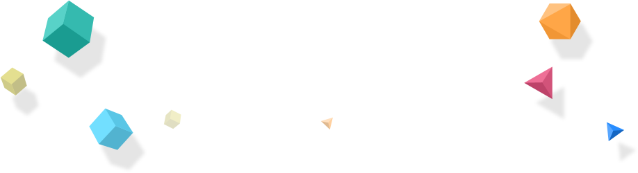

<!DOCTYPE html>
<html lang="en">
<head>
	<meta charset="UTF-8">
	<title>parallax 轻量级视差引擎</title>
	<link rel="stylesheet" href="parallax.css">
	<link rel="stylesheet" href="animation.css">
</head>
<body>
	<div class="wrapper">
		<div class="w-ban">
			<ul class="wrap" id="scene">
				<!-- <li class="layer bg1" data-depth="0.60">
					
				</li> -->
				<li class="layer " data-depth="1.00" href="javascript:;">
					
				</li>
				<li class="layer " data-depth="0.80" href="javascript:;">
					
				</li>
				<li class="layer " data-depth="0.60" href="javascript:;">
					
				</li>
				<li class="layer " data-depth="0.40" href="javascript:;">
					
				</li>
				<li class="layer " data-depth="0.20" href="javascript:;">
					
				</li>
				<li class="layer " data-depth="0.80" href="javascript:;">
					
				</li>
				<li class="layer " data-depth="0.60" href="javascript:;">
					
				</li>
				<li class="layer " data-depth="0.50" href="javascript:;">
					
				</li>
			</ul>
		</div>
	</div>
	<script src="parallax.js"></script>
	<script>
	//scene 里面的layer 是写死固定 有定位的，第一个元素是相对定位，之后的都是绝对定位，不能更改，要定义图片位置，就给图片绝对定位，之后排位置 
	var scene = document.getElementById('scene');
	var parallax = new Parallax(scene);
	</script>
</body>
</html>